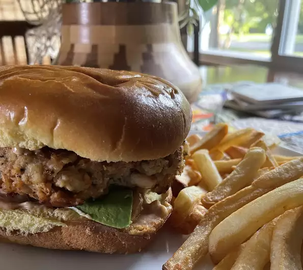

Shrimp Burgers

Description of Shrimp Burgers recipe
This is how you make Shrimp Burgers
Ingredients:
- 1 pound raw, peeled shrimp
- 1 egg, beaten
- 1 cup bread crumbs
- 1 small lemon, juiced
- 1 tablespoon lemon zest
- 1 teaspoon seafood seasoning
- ground black pepper to taste
- 2 tablespoons frozen butter cut in small pieces
- 2 tablespoons canola oil, or as needed
Steps:
- Roughly chop 3 or 4 shrimp and place in a bowl. Pulse remaining shrimp in a food processor and transfer to the bowl with the chopped shrimp.
- Combine egg, bread crumbs, lemon juice, lemon zest, seafood seasoning, and black pepper in a bowl. Add shrimp and butter. Form mixture into 3 patties and refrigerate at least 30 minutes.
- Heat oil in a skillet over medium heat. Cook patties until browned, 4 to 5 minutes. Flip and cook until second side is browned, 4 to 5 minutes more.